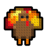
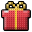
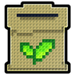
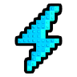
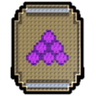
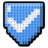
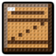
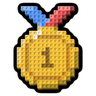

Event1 min readTurkey Mode, Global Trading quick access, Turkey Hut and CornucopiaTurn every enemy into an Evil Turkey, open Global Trading straight from the Trade UI, and grab two new Thanksgiving units.Read the post →Earlier posts
18 posts
Update1 min readAFK Zen Garden, spectating and Ranked 2 vs 2Plant units in your AFK Zen Garden to earn Seeds, livestream and watch games, and play Ranked 2 vs 2 PvP.Read → Event1 min readHalloween Part 3: 2 vs 2 PvP, Fantasy Survival and endless Daily RewardsTeam up in 2 vs 2 PvP, play Fantasy Frontier Survival, get free x1.5 and x2 Survival speed, and Daily Rewards that never end.Read →Event1 min readHalloween Part 2: new PvP season, Petriflora and NullshadeA PvP season refresh, friends leaderboards, an option to hide in-game notifications and two new Candy units.Read →Event1 min readHalloween Part 1: Maze Massacre, Night Mode and the Skull CrateA new Halloween map with 11 enemies and the Boneweaver boss, intense Night Mode, Blood Moon waves, Candy and a Skull Crate with 8 units.Read →
Event1 min readHalloween Part 3: 2 vs 2 PvP, Fantasy Survival and endless Daily RewardsTeam up in 2 vs 2 PvP, play Fantasy Frontier Survival, get free x1.5 and x2 Survival speed, and Daily Rewards that never end.Read →Event1 min readHalloween Part 2: new PvP season, Petriflora and NullshadeA PvP season refresh, friends leaderboards, an option to hide in-game notifications and two new Candy units.Read →Event1 min readHalloween Part 1: Maze Massacre, Night Mode and the Skull CrateA new Halloween map with 11 enemies and the Boneweaver boss, intense Night Mode, Blood Moon waves, Candy and a Skull Crate with 8 units.Read →
Update1 min readPushpetal, Inversia, faster PvP and Survival in SandboxPvP gets x2 and x3 speed, Survival Mode comes to Sandbox and two new limited stock units drop.Read →
Update1 min readTraits are here, plus the new Fertilizer currency22 new Traits, the Fertilizer currency to roll them, free Trait Incubators, and a map wave overhaul to fight power creep.Read →Update1 min readParasite Plant, Shockfrost Sprout and the Freeze reworkFreeze now stacks to stall enemies, top units get locked in PvP each week and two new limited stock units arrive.Read →Update1 min readNew map ratings, Ability UI, Mortarfern and ChronorchidSkulls now show how hard each level is, the Ability UI is smaller, storage holds up to 7,525 units and a new PvP season starts.Read →Update1 min readTrithorn, shorter PvP waves, Scopeleaf and TriangroveA Daily Reward exclusive unit, a Unit Keyword guide, shorter and faster PvP matches and easier Fantasy Frontier waves.Read →
Update1 min readUnit Lock, Slay Stem and AmpifloraLock your special units so they can't be deleted or traded by accident, plus two new limited stock units.Read →
Event1 min readFantasy Frontier has dropped!A new 6-level map with 12 fantasy enemies including the Flyvern boss, 10 themed units and a limited time Fantasy Summon.Read →Update1 min readDaily Reward units, PvP overhaul, Crate Pity and Autoplay15 days of Daily Reward units, Autoplay, a big PvP Mode overhaul with a new season, and Pity on the Original Crate.Read →Update1 min readCustom Clan Base, Clan Stars, Medusa Flower and BouncebloomDecorate your Clan Base, show it off to everyone, and summon base items with the new Clan Stars currency.Read →Notice1 min readRose Royale duplicates and trade-locked accounts explainedNo Rose Royale units were duplicated, and purchases on trade-locked accounts don't affect unit stock.Read →
Update1 min readBigger Clans and a PvP matchmaking overhaulClans can grow to 25 players and get custom icons, Clan Quests got easier, and PvP matchmaking is much faster.Read →Update1 min readClans are here!Create or join a Clan, chat with your team, do Clan Quests, climb Clan Ranks and hang out in your own Clan Base.Read →Notice1 min readSeed inflation: what's changing and whyThe GTD team is fighting Seed inflation caused by bot farms and power creep. Defeat Seeds are lower and some maps give different Seeds.Read →Update1 min readClassic Mode reward units, Pity and map overhaulsNew Classic Mode reward units on four maps, Pity on all Classic Mode units, and big wave and Seeds overhauls for Tropical Takedown and Radioactive Rampage.Read →No posts with that tag yet.

Get news first
Join the support server for updates, giveaways and sneak peeks.